2026 -
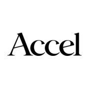
2026 -
I'm AI Resident to Shekhar Kirani at Accel, where I advise on AI investments and help portfolio companies. I still do research on the side, and I mentor startups at Conquest, BITS Pilani.
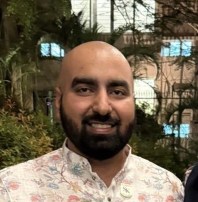

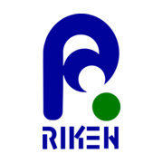
I work on understanding how neural networks learn and reason: the geometry of memory in RNNs, multi-step reasoning in LLMs, learning in physical systems. Lately that means LLM security, agent simulations, in-context learning for science, and sampling-based planning for robotics.
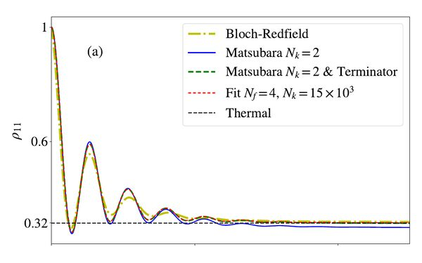
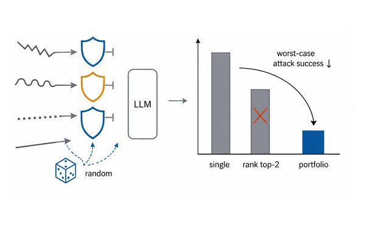
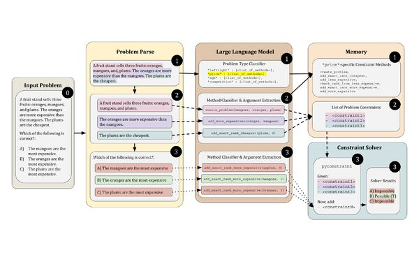
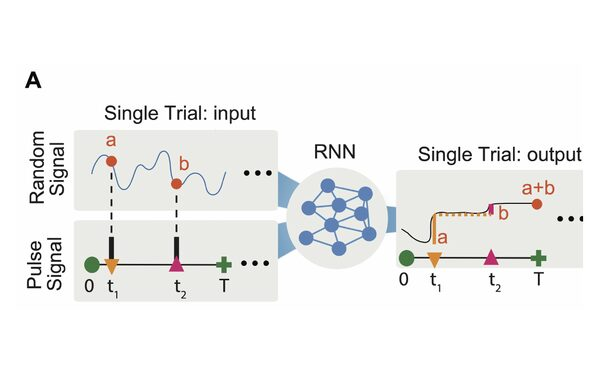
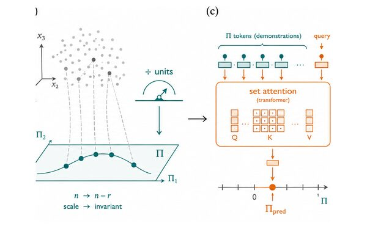
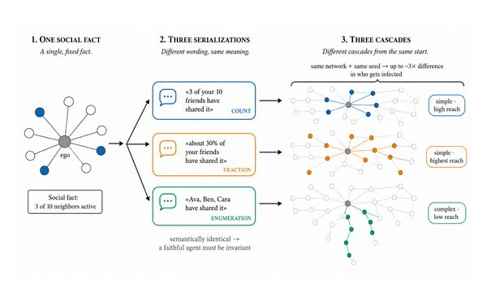
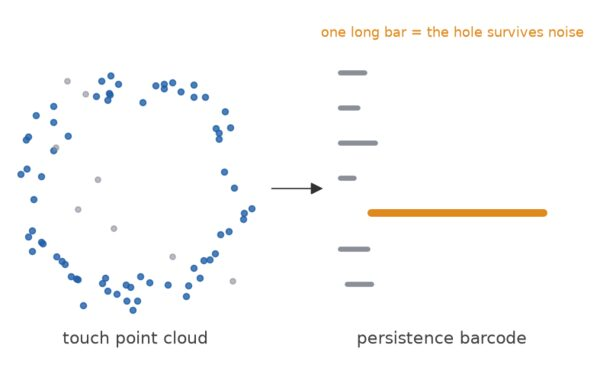
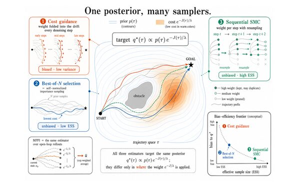
Reviewer for ICLR (2025, 2026, 2027) and NeurIPS 2026, plus a dozen workshops.
I've been lucky to work with some truly amazing people:
Favorite read: HPMOR.